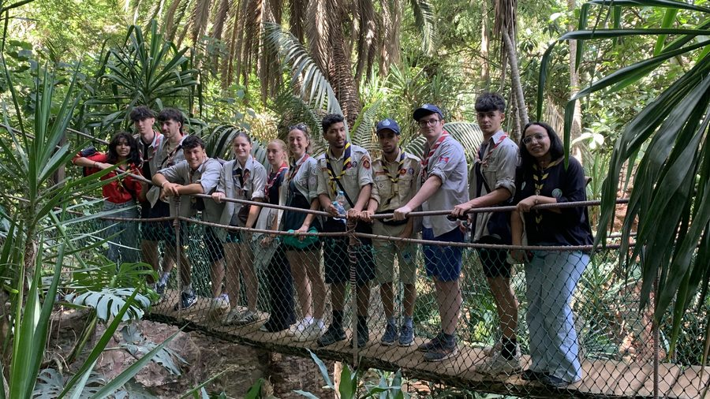
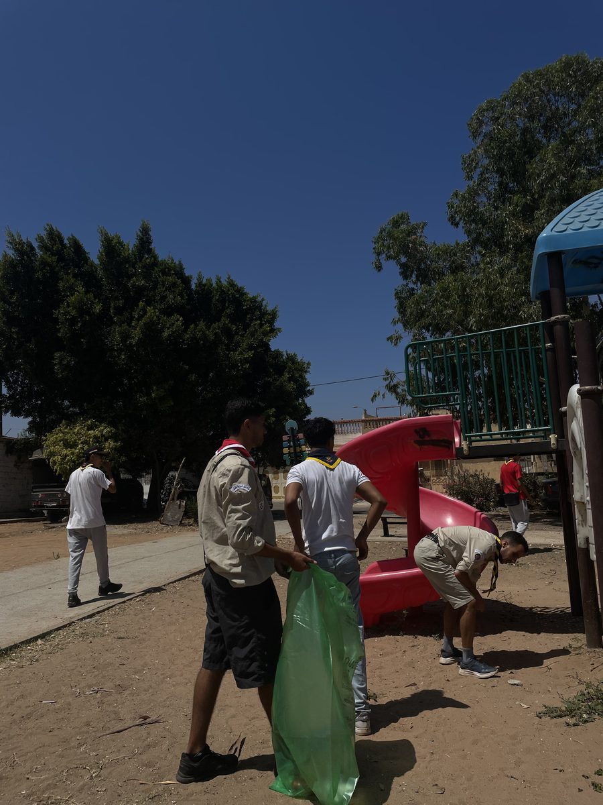
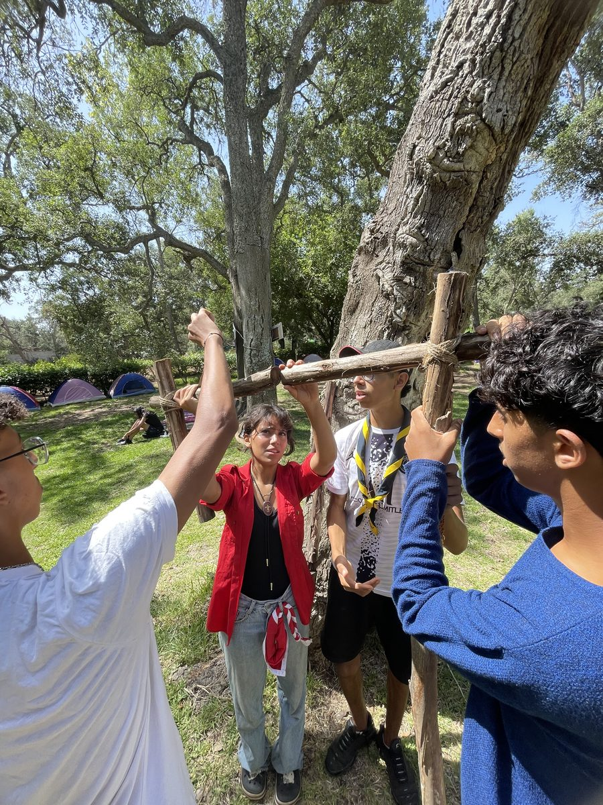
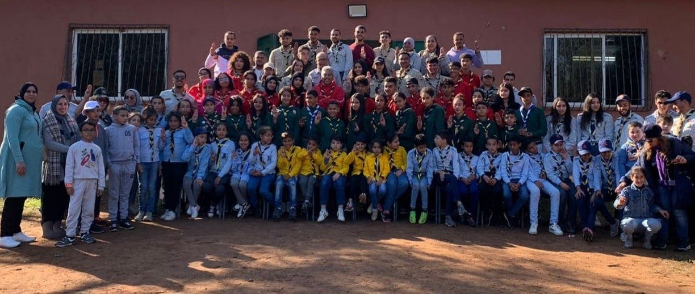
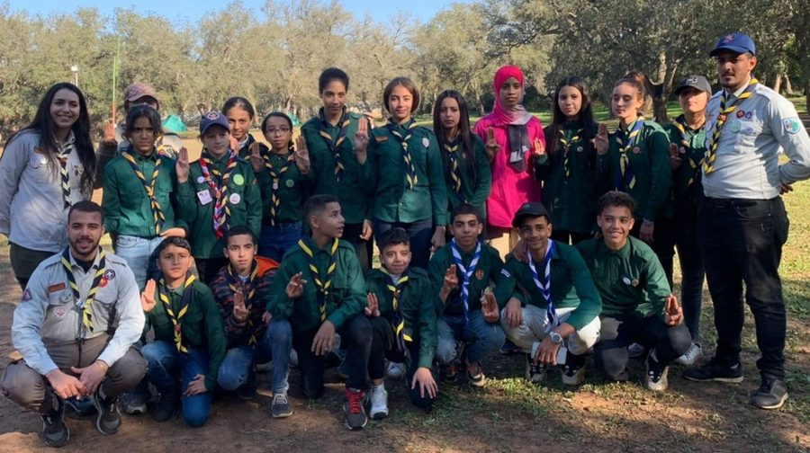

أنشطة الفرع
برنامج غني على مدار السنة لجميع الأقسام
الأنشطة القادمة

المخيم الصيفي الكبير
عشرة أيام من التخييم والحياة في الطبيعة: نصب الخيام، الطبخ الكشفي، الألعاب الكبرى، السهرات، والورشات التربوية. الحدث الأبرز في الموسم الكشفي.

حملة نظافة الشاطئ
حملة بيئية مواطنة لتنظيف شاطئ المدينة وتحسيس المصطافين بأهمية الحفاظ على البيئة الساحلية.

ورشة الإسعافات الأولية
تكوين عملي في الحركات المنقذة للحياة: الإنعاش، الضمادات، التعامل مع الحوادث. مهارة أساسية لكل كشاف.

خرجة استكشافية جبلية
يوم كامل من المشي الجبلي والاستكشاف وتطبيق تقنيات التوجيه بالخريطة والبوصلة وسط طبيعة خلابة.
سهرة النار الكبرى
أمسية من الأناشيد والصيحات والمسرحيات والحكايات حول نار المخيم، مع لعبة «خائن في المخيم» الجماعية!

ورشة الخرائط والتوجيه
تعلّم قراءة الخرائط الطبوغرافية واستعمال البوصلة وتقدير المسافات، ثم تطبيق ميداني على شكل لعبة بحث عن الكنز.
للتسجيل في نشاط، تواصلوا معنا عبر صفحة الاتصال أو عبر صفحاتنا على مواقع التواصل الاجتماعي. قريباً: التسجيل والأداء عبر فضاء الأعضاء مباشرة في الموقع.